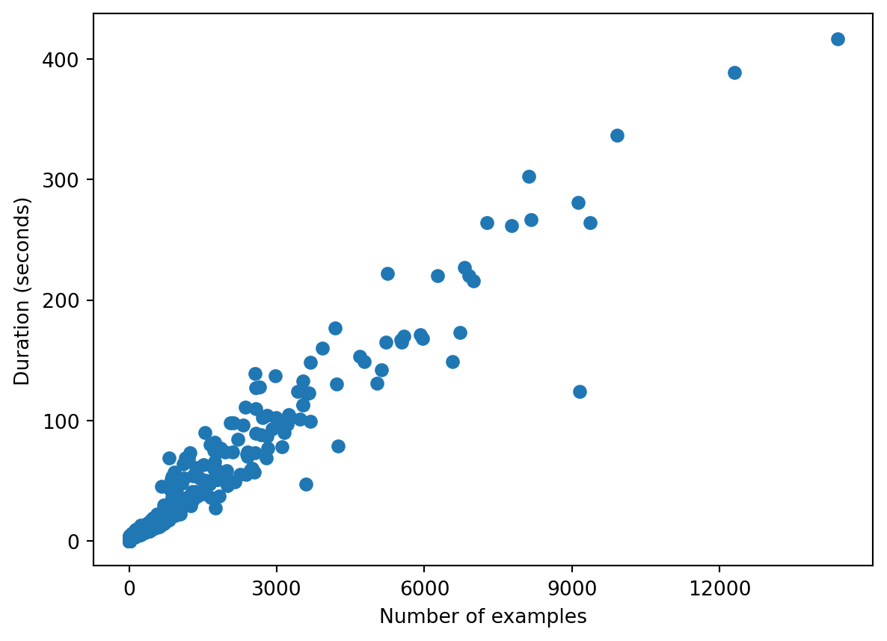
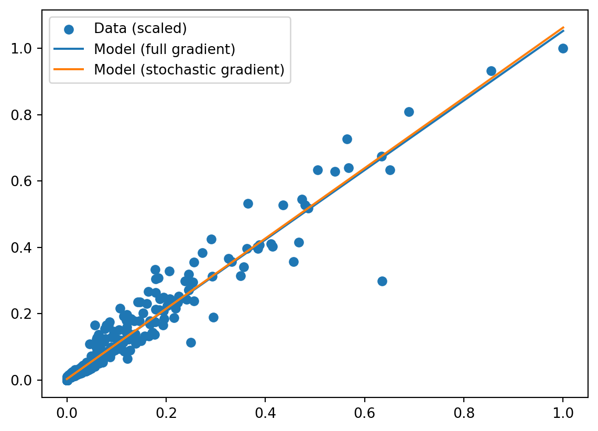

import pandas as pd
metrics = pd.read_csv("data/metrics.csv")Learning by Gradient Descent
This is one of the posts in a series that aims to build an understanding of Large Language Models (LLMs) starting from the absolute basics. The only background knowledge assumed is some coding ability and pre-college math.
Last updated: Aug 19, 2024.
When we first learn programming, we learn to give the computer precise instructions to solve a problem. A program is an encoding of procedural knowledge:
Computational processes are abstract beings that inhabit computers. As they evolve, processes manipulate other abstract things called data. The evolution of a process is directed by a pattern of rules called a program. People create programs to direct processes. In effect, we conjure the spirits of the computer with our spells.
– Structure and Interpretation of Computer Programs
Machine learning is a radically different way of using computers to solve problems. We assume that in some platonic realm there exists a function that perfectly solves our problem. We try to approximate this function with a family of functions and call it our model. We pick a specific member of that family by learning the parameters of the model using training data.
Problem: how long will this job run?
A note about finding problems. When I used to endlessly consume ML textbooks, videos, blog posts, I always came away a bit dissatisfied and feeling like I hadn’t really learned anything. Will the method I just learned work on anything other than the Iris dataset from 1936? Learning that way skipped over one of the hard parts of doing ML: figuring out what kind of model would even work for a given problem. If you have felt the same way, I encourage you to find problems and datasets from your own life, or atleast find a different dataset on your own and try to apply your newly learned techniques to it.
For this post I’ve assembled a dataset from a problem I encountered myself. Assume there is an ML training job that you want to run on datasets of varying sizes. It’s not important what the job does. The only intuition we need is the reasonable expectation that the running time of the job is proportional to the number of training examples in a given run. We can scatter plot the data and confirm this intuition.

Given that we have one continuous input variable n and we wish to predict another continuous variable duration, the simplest model to try is a line that is closest to all the points. For reasons of convention we’ll denote our input as the vector \({\textbf X}\) and the output as the vector \({\textbf Y}\). We’ll give these values the Julia type Rn to state that they are real-valued vectors of some size n, or in math terms, belong to the set \(R^n\).
(Note that we’re scaling both \({\textbf X}\) and \({\textbf Y}\) values to be in the range \([0, 1]\). This is necessary for most ML algorithms to work well, but I don’t understand it deeply enough to explain in this post.)
def scale(v):
return (v - v.min()) / (v.max() - v.min())
X = scale(metrics["n"].to_numpy())
Y = scale(metrics["duration"].to_numpy())Now we can write our model as:
\[ {\textbf Y} = \theta_1 + \theta_2 {\textbf X} \]
The corresponding functions in Julia, for both a single input x and a vector input X.
def prediction(X, θ):
return θ[0] + θ[1] * XLearning the parameters
The model above describes an infinite number of lines. To find a specific line that best fits the available data, we need to find the values of \(\theta_1\) and \(\theta_2\). We’re also making the assumption that such a line will help us predict the output variable on unseen future data. For more complicated models this is not true by default and special measures need to be taken to reduce overfitting.
How can we find the parameter values? The answer is one of the most important ideas in ML:
The parameters of a model are found by minimizing a loss function.
The loss function (also called the cost or objective) is a measure of how well a model fits its training data. Thus it is a function of both the parameters of the model and the training data.
In our problem we want the loss value to be 0 if the prediction values (denote as \({\hat {\textbf Y}}\)) exactly match the training values \({\textbf Y}\). This is not possible because our data points don’t all lie on a single line. The next best thing therefore is to find parameter values such that the loss is the lowest value possible.
We thus want our loss function to have the following reasonable properties:
- It must measure the distance between the prediction and the correct value. If the predictions are far off, the loss needs to be higher.
- Each training example must contribute to the loss.
We can thus derive the following loss function:
\[ L(\theta, {\textbf X}, {\textbf Y}) = \sum_{i = 1}^{n} (Y_i - \theta_1 + \theta_2 X_i)^2 \]
def loss(X, Y, θ):
return ((Y - prediction(X, θ)) ** 2).sum()Why are we squaring each of the terms? Why aren’t we just using the absolute value of the difference? I’m sure there are many reasons for it, but one of them is that we are going to differentiate this function to find its minimum.
Gradient descent
The problem of finding the right \(\theta\) to fit a line has an exact mathematical solution, but we’re going to find it the ML way using the technique of gradient descent.
We start with arbitrary values for \(\theta\) and iteratively change them such that the loss gets smaller. If you imagine the loss function as a 3d surface (in this case it looks like a bowl), we start somewhere on that surface and continuously try to move downhill.
Recall that the derivative of a function is how much its value changes when its input changes by a little bit. If the derivative at a point is positive, it means a small positive change in the input causes the function to increase. If the derivative is negative, a small positive change in the input causes the function to decrease.
Thus if our goal is to minimize \(L(\theta)\), we should modify each parameter at each step by an amount that’s proportional to the derivative of the loss, but negated. Since there are many parameters we want the partial derivative of the loss with respect to each parameter, and all these derivatives considered together is the gradient.
We can derive expressions for the gradient by normal calculus:
\[\begin{eqnarray} \frac{\partial L}{\partial \theta_1} &=& \sum_{i = 0}^{n} 2 ({\hat y}_i - y_i) \\ \frac{\partial L}{\partial \theta_2} &=& \sum_{i = 0}^{n} 2 \cdot ({\hat y}_i - y_i) \cdot x_i \\ \end{eqnarray}\]
In code we’ll call this the full_gradient, since we’re using the entire dataset to compute it. Ignore the last parameter (_) for now, it’ll become relevant soon enough.
import numpy as np
def full_gradient(X, Y, θ, _):
return np.array([
2 * (prediction(X, θ) - Y),
2 * (prediction(X, θ) - Y) * X
]).sum(axis=1)The descend function below iteratively updates the parameters based on the gradient. The key line of code is:
θ = θ .- λ .* δλ here is called the learning rate. It’s the size of the step the algorithm takes when descending the gradient. Picking the right value of λ is a topic on its own, but for this example I just did trial and error until I found a learning rate that works.
The descend function also does a couple of other things: (1) record the value of the loss periodically (2) bail out when the loss starts to converge.
def descend(gradient, λ):
θ = np.array([-1.0, 1.0]) # Initial values of params, picked arbitrarily.
iters = []
losses = []
l = loss(X, Y, θ)
for i in range(100000):
prev_loss = l
l = loss(X, Y, θ)
# Bail out if the loss has converged
if i > 1 and abs(prev_loss - l) < 1e-6:
print(f"i = {i}, bailing out, l = {l}, prev = {prev_loss}")
break
# Record progress
if i == 1 or i % 100 == 0:
iters.append(i)
losses.append(l)
# Compute gradient and update params
δ = full_gradient(X, Y, θ, i)
θ = θ - λ * δ
return θ, (iters, losses)Running the descent gives:
def run_descent(g, λ):
θ, (iters, losses) = descend(g, λ)
for i in range(len(iters)):
print(f"iteration = {iters[i]}, loss = {losses[i]}")
print(f"\nLearned parameters: {θ}")
return θ, (iters, losses)
θ_full, trace_full = run_descent(full_gradient, 0.00001)i = 564, bailing out, l = 0.5635438421490638, prev = 0.5635448256267925
iteration = 0, loss = 785.2017903892629
iteration = 1, loss = 760.9808547197216
iteration = 100, loss = 34.676846469498926
iteration = 200, loss = 2.0468144605161855
iteration = 300, loss = 0.6281350601009863
iteration = 400, loss = 0.5664087239079463
iteration = 500, loss = 0.5636792116936536
Learned parameters: [0.00303936 1.04948881]Stochastic gradient
There’s a massive improvement possible to the above method that sounds crazy the first time you hear it: what if instead of using the entire dataset to compute the gradient, we used just a single training example?
The gradient computed this way is called the stochastic gradient because it’s a random messy estimate of the true (full) gradient.
We implement this in code by getting rid of the loop from full_gradient and instead passing in the index (i) of the training example we want to use to compute the gradient.
def stochastic_gradient(X, Y, θ, i):
δ = np.zeros(2)
i = i % len(X)
δ[0] = 2 * (prediction(X[i], θ) - Y[i])
δ[1] = 2 * (prediction(X[i], θ) - Y[i]) * X[i]
return δRunning the descent gives:
θ_stochastic, trace_stochastic = run_descent(stochastic_gradient, 0.001)i = 115, bailing out, l = 0.5622445960982152, prev = 0.5622455653604557
iteration = 0, loss = 785.2017903892629
iteration = 1, loss = 242.72688291676087
iteration = 100, loss = 0.5622634641569464
Learned parameters: [0.00268266 1.05993278]It’s pretty close to the answer we got from using the full gradient! Note that we had to use a different learning rate (0.001) to get this to converge. We can plot both lines against the data to see how well they fit and how close they are to each other.

Estimating the gradient using a fraction of the dataset makes large-scale machine learning possible. A real-world neural network like GPT-3 has 175 billion parameters, the vectors involved have dimensions in the tens of thousands, and the number of training examples is in the billions. It would be practically impossible to train a model like that by computing the full gradient on each iteration.
The optimization methods used to train such models are far more sophisticated (e.g., Adam) but they retain the core idea that a fuzzy estimate of the gradient derived from a subset of the data is enough to reach an acceptable minimum of the loss function.
Why does it work?
Why does this method of stochastic gradient descent work so well, even for loss functions that are unimaginably complex? These are the answers I’ve been able to gather so far:
- Many loss functions in ML are designed to be convex (bowl-shaped).
- There is redundancy in the data. If there are say 10 points all close together, the gradient calculated using just one of those points will be pretty close to the one calculated using all 10 points.
- We don’t need to know the exact gradient, just an unbiased estimator of it. Put another way, if you want to get from San Francisco to LA, you don’t need the exact compass direction, you just need to get on one of the freeways going south.
Further Reading
The structure of this post closely follows section 1.1 of these notes. Also note section 1.2 that contains the exact mathematical solution to the linear regression problem.
Section 7.1 contains a detailed discussion of gradient descent methods, including more sophisticated ideas like momentum.
Section 3.3 describes many motivations for using stochastic gradient descent and why it works so well.